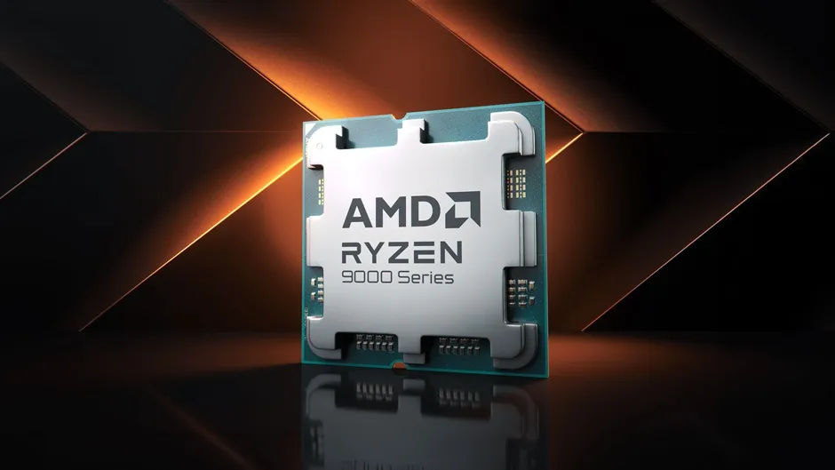

Ryzen 9000X – Nowa generacja procesorów AMD

Opublikowano: 12 stycznia 2026
Co nowego w serii Ryzen 9000X?
AMD zaprezentowało najnowszą generację procesorów Ryzen 9000X, która oferuje przełomową wydajność dla graczy i profesjonalistów. Nowa architektura przynosi znaczące usprawnienia w:
- Wydajności jednowątkowej i wielowątkowej
- Energooszczędności i zarządzaniu ciepłem
- Obsłudze PCIe 5.0 i szybkich pamięci DDR6
- Nowych funkcjach AI i przyspieszeniu obliczeń związanych z uczeniem maszynowym
Specyfikacja techniczna
- Rdzenie/wątki: 16/32 (najmocniejszy model)
- Base/Boost: 4,0 / 5,8 GHz
- Pamięć podręczna L3: 128 MB
- TDP: 105 W (optymalizacja pod względem wydajności)
- Socket: AM6+
Nowe możliwości dla graczy i profesjonalistów
Ryzen 9000X pozwala na:
- Płynne granie w 4K i wyższych rozdzielczościach
- Rendering wideo i modelowanie 3D z maksymalną wydajnością
- Lepszą współpracę z najnowszymi kartami graficznymi i pamięciami DDR6
- Wsparcie dla sztucznej inteligencji i akceleracji obliczeń AI
Premiera i dostępność
Procesory Ryzen 9000X są już dostępne w sprzedaży na całym świecie. AMD współpracuje z producentami płyt głównych, aby zapewnić kompatybilność z najnowszymi chipsetami i BIOS-ami.
← Wróć na stronę główną
Źródła / bibliografia